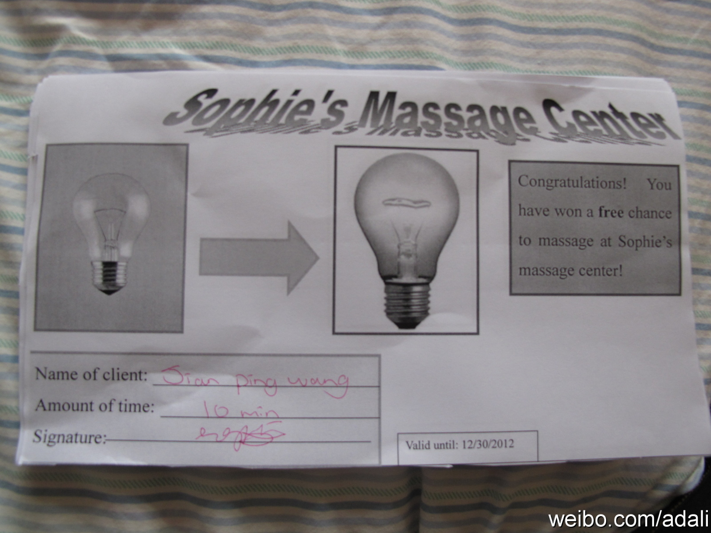
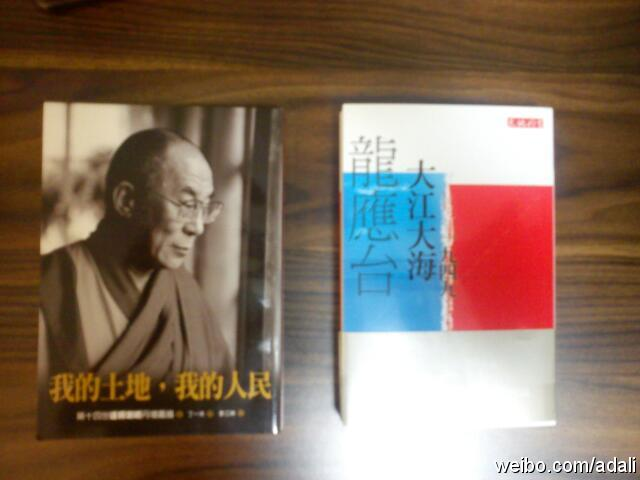

今天母亲节，同学建平从9岁女儿索菲那里收到的礼物是一叠按摩票。索菲自制的，有自己的签名，有截止日期，每张票可以得到索菲的十分钟按摩。我大力夸赞这个礼物。建平就让索菲给我按摩了会儿，挺有劲儿，还真不是敷衍。我是不是回去唆使姣姣也这么做。 
保存一下这个定义。@中国架构师:企业架构师(Enterprise Architect) 是企业IT的总体规划和设计师， 他们总揽企业的业务流程、应用、 数据、和技术等各个方面，兼分 析师、设计师、教师、顾问、监察等数职于一身。他们的日常工作包括设计总体架构、形成业务需求、负责沟通交流、选择解决方案、评估技术策略、掌管整体方向。
看到母亲节有些新闻，比如让孩子给母亲洗脚。我总觉得无法消受这种孝敬方式，一方面可能来自我母亲的遗传，她是那种不能坦然接受别人照顾和体贴的中国女性。另一方面，我比较讨厌仪式化的东西。到北京了，就给老妈打打电话吧，反正她从来都是不要我给她买东西。
2001年左右在香港生活工作了一段时间，这次再来，感触最大的是物价基本没变化，问起来工资也没太涨，十年前，菲佣是3500元一个月，现在是3600左右。但国内的变化就太大了。2004年，我请个保姆是600元一个月，2011年，同一个保姆，工资已经要到2500元一个月，工作量还变小了。
回北京的飞机延误了一个半小时，因此在香港机场里逛了逛，买了两本书，花了210港元，和国内的书价比，真贵。但这两本书国内买不到。“大江大海“，“我的土地，我的人民“，台湾出的，繁体竖排版，读着颇不习惯。 
回复 @李大鹏_北京:更高境届是做技术的把你当靠谱同行看，做销售的认为你是个靠谱销售。 //@李大鹏_北京:看了姐的微博，果然见识很广！使我立志向姐学习！什么时候也让做技术的看我像是做销售的就达到境界了@Ada李力:回北京的飞机延误了一个半小时，因此在香港机场里逛了逛，买了两本书，花了210港元，和国内的书价比，真贵。但这两本书国内买不到。“大江大海“，“我的土地，我的人民“，台湾出的，繁体竖排版，读着颇不习惯。